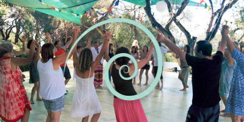
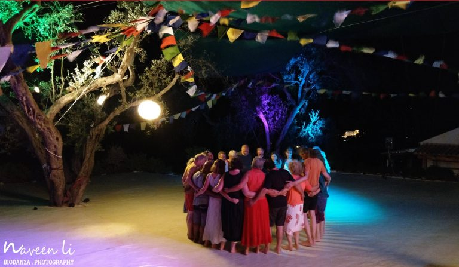

Willkommen bei Biodanza
Was ist Biodanza?
Es geht bei dieser kraftvollen Methode um ein kreatives Tanzen, das viel Freiraum lässt. Mit Biodanza laden wir Leichtigkeit, Freude, Lebendigkeit, Kraft, Mut, Genuss und Entspannung in unser Leben ein.
Wir stärken unser Selbstwertgefühl und unsere Identität. Unsere eigenen Potentiale werden geweckt und können sich entfalten.
Ich erlaube mir, mich zu fühlen und mein Herz zu öffnen. Biodanza schafft einen Raum, der heilsame Prozesse ermöglicht, wo das persönliche Erleben im Hier und Jetzt im Mittelpunkt steht.
Tanz, Musik und Gemeinschaft stärkt und nährt unser Wohlbefinden. Ausgelassen, stark und ausdrucksvoll, aber auch leise und zart begegnen wir uns selbst und Anderen in Wertschätzung und Achtsamkeit.
Sei einfach – einfach SEIN
